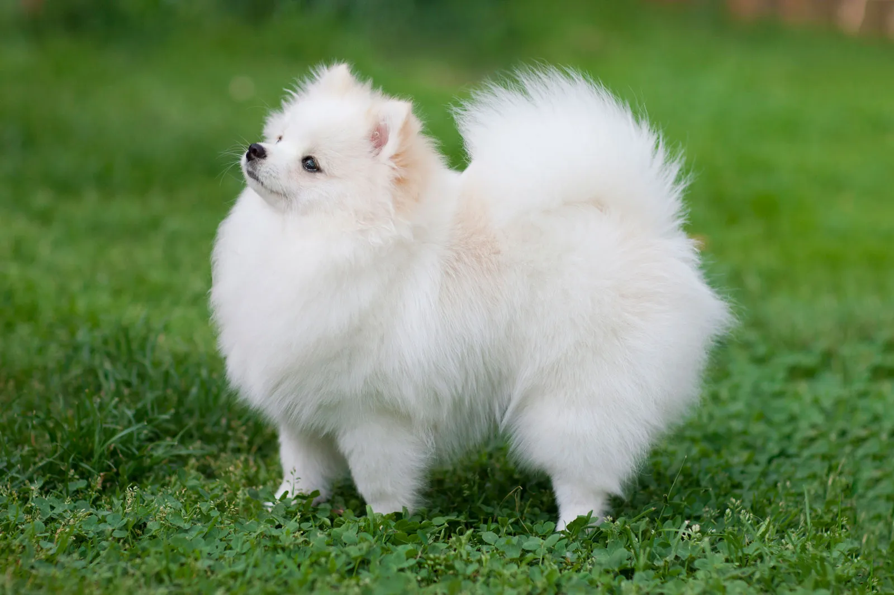

Appearance
Pomeranians are categorized as small dogs. Their height ranges from 6–7 inches, and they typically weigh 3–7 pounds. Common colors include white, cream, black, brown, and reddish brown.
| Height | 6–7 inches |
|---|---|
| Weight | 3–7 pounds |
| Coat | Dense double coat, plumed tail |
| Colors | White, cream, black, brown, reddish brown |
1 / 3

3 / 3

3 / 3